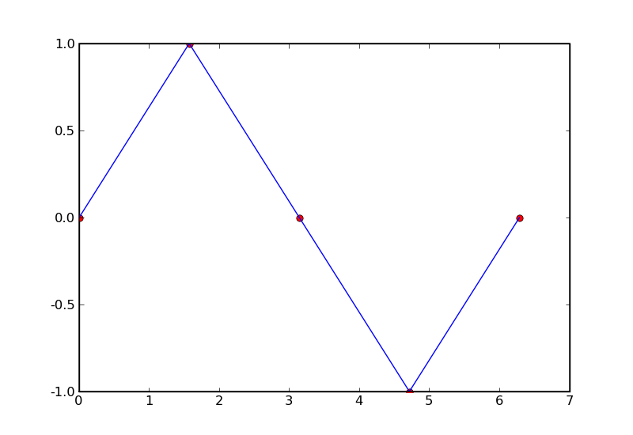
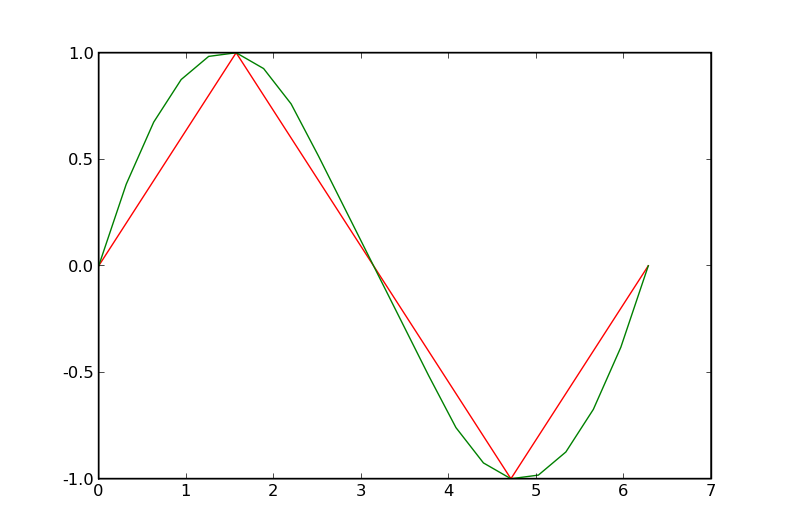
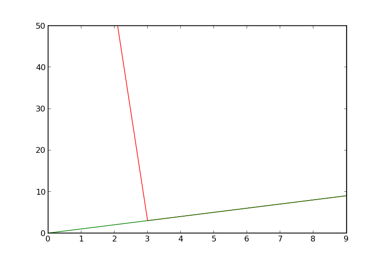

The interpolate package provides tools for interpolating and extrapolating new data points from a known set of data points. Interpolate provides both a functional interface that is flexible and easy to use as well as an object oriented interface that can be more efficient and flexible for some cases. It is able to interpolate and extrapolate in 1D, 2D, and even N dimensions.*[fixme: 1D only right now]*
For 1D interpolation, it handles linear and spline(cubic, quadratic, and quintic) for both uniformly and non-uniformly spaced data points “out of the box.” Users can control the behavior of values that fall outside of the range of interpolation either by When new values fall outside of the range of interpolation data, the tools can be
For 2D interpolation,
The following example uses the ‘interp1d’ function to linearly interpolate a sin curve from a sparse set of values.
# start up ipython for our examples.
$ ipython -pylab
In [1]: from interpolate import interp1d
# Create our "known" set of 5 points with the x values in one array and the y values in another.
In [2]: x = linspace(0, 2*pi, 5)
In [3]: y = sin(x)
# If we only want a value at a single point, we can pass in a scalar and interp1d
# will return a scalar
In [9]: interp1d(x, y, 1.2)
Out [10]: 0.76394372684109768
# 0-dimensional arrays are also treated as scalars
In [9]: interp1d(x, y, array(1.2) )
Out [10]: 0.76394372684109768
# To interpolate from these x,y values at multiple points, possibly to get a more dense set
# of new_x, new_y values to approximate the function, pass a numpy array to interp1d,
# and the return type will also be a numpy array.
In [4]: new_x = linspace(0, 2*pi, 21)
In [5]: new_y = interp1d(x, y, new_x)
# Plot the results using matplotlib. [note examples assume you are running in ipython -pylab]
In [6]: plot(x, y, 'ro', new_x, new_y, 'b-')

# Alternatively, x, y and new_x can also be lists (they are internally converted into arrays # before processing) In []: interp1d( [1.0, 2.0], [1.0, 2.0], [1.3] ) Out []: array([ 1.3 ])
What happens if we pass in a new_x with values outside the range of x? By default, new_y will be NaN at all such points:
# If we attempt to extrapolate values outside the interpolation range, interp1d defaults # to returning NaN In [7]: interp1d(x, y, array([-2, -1, 1, 2])) Out [8]: array([ NaN, NaN, 0.63661977, 0.72676046])
If we want a type of interpolation other than linear, there is a range of options which we can specify with the keyword argument interp, which is usually a string. For example:
# If we want quadratic (2nd order) spline interpolation, we can use the string 'quadratic' In [7]: new_y_quadratic = interp1d(x, y, new_x, interp = 'quadratic') In [8]: plot(x, y, 'r', new_x, new_y_quadratic, 'g')
There is a large selection of strings which specify a range of interpolation methods. The list includes:
The same flexibility is afforded for extrapolation by the keywords extrap_low and extrap_high:
In []: z = array([ 1.0, 2.0 ]) In []: interp1d(z, z, array([-5.0, 5.0]), extrap_low = 'linear', extrap_high = 'linear') Out []: array([-5.0, 5.0])
If a string is passed which is not recognized, and error will be raised.
Finally, interp, extrap_low, and extrap_high can be set to default return values (just make sure that the return values are not callable and are not strings):
In []: interp1d(x, y, array([ -5.0, 1.1, 100 ]), interp = 8.2, extrap_low = 7.2, extrap_high = 9.2) Out []: array([ 7.2, 8.2, 9.2 ])
It is also possible, though slightly trickier, to define your own interpolation methods and pass them in to interp, extrap_low, and extrap_high. For more information, see “User-defined Interpolation Methods” below.
Many datasets have missing or corrupt data which it is desirable to ignore when interpolating, and to this end, interp1d has the keyword argument bad_data.
bad_data defaults to being None. But if it is a list, all “bad” points (x[i], y[i]) will be removed before any interpolation is performed. A point is “bad” if 1) either x[i] or y[i] is in bad_data, or 2) either x[i] or y[i] is NaN
Note that bad_data must be either None or a list of numbers. Including NaN or None in the list, for example, is not supported. NaNs are removed anyway, and None must not appear in the data.
# the bad_data In []: x = arange(10.); y = arange(10.) In []: x[1] = NaN # bad data In []: y[2] = 55 # bad data In []: new_x = arange(0, 10., .1) In []: new_y_bad = interp1d(x, y, new_x) In []: new_y_no_bad = interp1d(x, y, new_x, bad_data=[55]) In []: plot(new_x, new_y_bad, 'r', new_x, new_y_no_bad, 'g')
If you want more direct control than is afforded by the string interface, this is also possible. Note, however, that this is not for the faint-hearted. You must be very careful to have correct format, and failure to do so can cause a range of errors.
interp can also be set to a function, a callable class, or an instance of a callable class. If you do this, however, you will have to be careful about formatting.
If a function is passed, it will be called when interpolating. It is assumed to have the form
newy = interp(x, y, newx, **kw)
where x, y, newx, and newy are all numpy arrays.
If a callable class is passed, it is assumed to have format:
instance = Class(x, y, **kw).
which can then be called by
new_y = instance(new_x)
If a callable object with method “init_xy” or “set_xy” is passed, that method will be used to set x and y as follows:
instance.set_xy(x, y, **kw)
and the object will be called during interpolation.
new_y = instance(new_x)
If the “init_xy” and “set_xy” are not present, it will be called as
new_y = argument(new_x)
A primitive type which is not a string signifies a function which is identically that value (e.g. val and lambda x, y, newx : val are equivalent).
# However, this behavior can be overwritten in the same way as linear interpolation,
# by setting the keyword extrap_low (for values below the range of interpolation) and
# extrap_high (for values above that range)
In []: def dummy(x, y, newx, default = 5.1):
# Note that dummy has acceptable form
return np.array([ default ])
In []: class Phony:
def __init__(self, val = 4.0):
self.val = val
def init_xy(self, x, y):
pass
def __call__(self, newx):
return self.val
In []: x = arange(5.0)
In []: y = arange(5.0)
In []: new_x = np.array([ -1, .4, 7 ])
In []: new_y = interp1d(x, y, interp = Phony,
interpkw = {'val':1.0},
extrap_low = dummy,
lowkw = {'default':7.1},
extrap_high = dummy
)
In []: new_y
Out []: array([ 7.1, 1.0, 4.0 ])